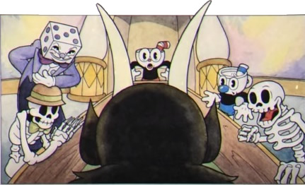

A História
Era uma vez, em um lugar mágico chamado Ilha Tinteiro, havia dois irmãos chamados Xicrinho e Caneco (Cuphead & Mugman). Eles viviam sobre os cuidados do olhar atento do sábio Vovô Xaleira.
Um dia, os dois meninos vagaram longe de casa e apesar dos muitos avisos do Vovô Xaleira, acabaram do lado errado dos trilhos e então encontram o Cassino do Diabo, onde resolveram entrar e tentar a sorte.
Lá dentro, Xicrinho e Caneco logo se viram em uma sequência de vitórias na mesa de Craps. Todos ao redor admirados com a maré de sorte do Xicrinho. "Quente cara!" exclamou O Rei Dado, o Gerente desprezível do cassino. "Esses caras não podem perder!"

"Boa corrida, rapazes" riu um recém-chegado. Os irmãos ofegaram. Era o dono do cassino - o próprio Diabo! "Agora, que tal aumentarmos as apostas?" ele sugeriu com um sorriso cheio de dentes.
"Ganhe mais uma jogada e todo o saque do meu cassino será seu!" o Diabo explodiu. "Mas se você perder, eu terei suas almas! Estamos de acordo?
Xicrinho, cego por riquezas fáceis, aceitou e pegou os dados para um lance. "Meu Deus, Xicrinho, não!" gritou Caneco, pois compreendia o perigo. Mas infelizmente era tarde demais!
"Olho-de-Cobra!" riu o diabo enquanto batia no chão. "Você perdeu!" Os irmãos tremeram de medo enquanto ele se aproximava. "Agora, sobre essas almas..."
Os irmãos imploraram por suas próprias mentiras. "T-deve haver outra maneira de recompensá-lo," Caneco gaguejou. "Sim, p-por favor, senhor!" Xicrinho, morto de medo, também foi junto na ideia do irmão.
"Hmm, talvez haja", o Diabo riu, tirando um pergaminho e disse: "Eu tenho aqui uma lista de meus devedores fugitivos. Recolha suas almas para mim e eu posso perdoar vocês, suas canecas trapalhonas.
"Agora vão!" o Diabo rugiu, chutando os meninos mais rudemente. "Vocês tem até meia-noite de amanhã para coletar cada uma dessas almas! Caso contrário, irei pessoalmente coletar suas almas. Fora daqui! Chutando nos amigos de dentro pra fora.
"Xicrinho e Caneco ficaram terrivelmente assustados e fugiram o mais rápido que puderam. "Vamos, Caneco!" Disse Caneco ofegante. "Nós temos que encontrar oo vovõ Xaleira. Ele saberá o que fazer!"